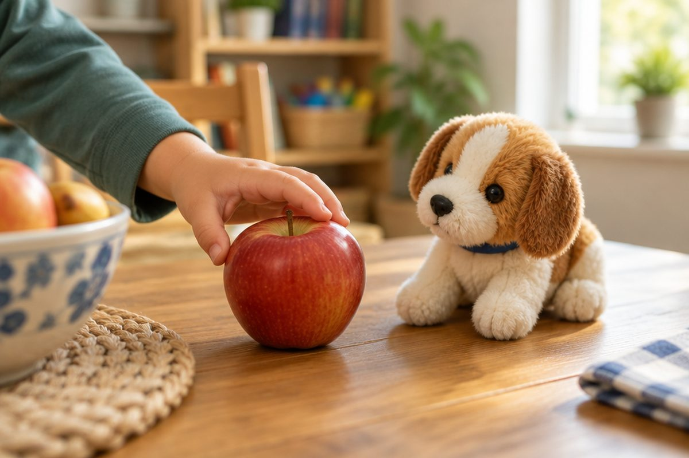

전체 단원 › 2학년 › 영어 › 3단계 · I like ~ 좋아하는 것
좋아하는 것을 영어로 어떻게 말할까?

피자를 좋아하나요? 오늘은 좋아하는 것을 영어로 말해 봐요.
I like ~는 "나는 ~을 좋아해"
I는 "나는", like는 "좋아해"예요.
I like 다음에 좋아하는 것을 말해요.
I like apples. (나는 사과를 좋아해.)
여러 가지를 좋아해요
동물도, 음식도, 색깔도 말할 수 있어요.
I like dogs. I like pizza.
I like blue.
I like cats. I like milk.
좋아하지 않을 때
싫으면 I don't like ~라고 해요.
don't는 "~하지 않아"라는 뜻이에요.
I don't like carrots. (나는 당근을 안 좋아해.)
친구에게 물어봐요
Do you like ~?는 "너는 ~을 좋아하니?"예요.
좋으면 Yes, I do. 싫으면 No, I don't.
Do you like dogs? → Yes, I do!
핵심 낱말
- like
- 좋아하다
- I like ~.
- 나는 ~을 좋아해.
- I don't like ~.
- 나는 ~을 좋아하지 않아.
- Do you like ~?
- 너는 ~을 좋아하니?
꼭 알아야 할 표현
| I like apples. | 나는 사과를 좋아해. | |
| I like dogs. | 나는 개를 좋아해. | |
| I like cats. | 나는 고양이를 좋아해. | |
| I like pizza. | 나는 피자를 좋아해. | |
| I like blue. | 나는 파란색을 좋아해. | |
| I don't like carrots. | 나는 당근을 좋아하지 않아. | 싫을 때 |
| Do you like dogs? | 너는 개를 좋아하니? | 물어볼 때 |
| Yes, I do. | 응, 좋아해. | 좋아할 때 대답 |
| No, I don't. | 아니, 안 좋아해. | 싫을 때 대답 |
| like | 좋아하다 | [라이크] |
한 줄 정리
- I like ~. = 나는 ~을 좋아해.
- I don't like ~. = 나는 ~을 좋아하지 않아.
- Do you like ~?에는 Yes, I do. / No, I don't.로 대답해요.
학교 교육과정 연결 (미리 배우기)
- [4영02-05] 자신, 주변 사람이나 사물의 소개나 묘사를 쉽고 간단한 문장으로 말하거나 보고 쓴다.
- [4영02-08] 자기 주변 주제에 관한 담화의 주요 정보를 묻거나 답한다.